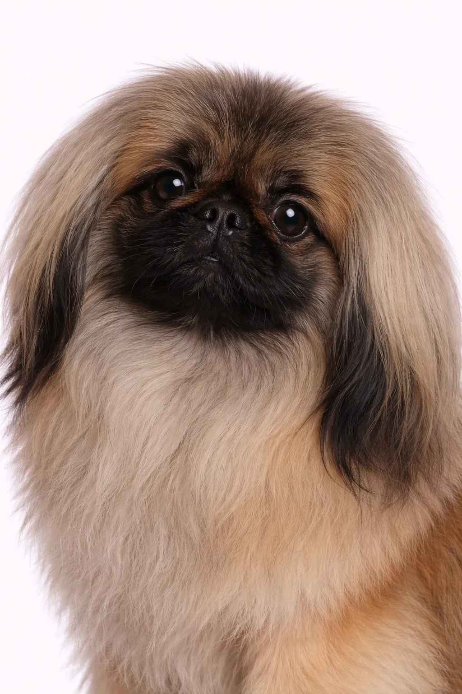

Pekingese
An ancient breed developed for Chinese royalty, the Pekingese maintains their dignified, independent nature. They're devoted to their owners but can be aloof with strangers.
Rodun Arviot
Luonne
Yleiskatsaus
An ancient breed developed for Chinese royalty, the Pekingese maintains their dignified, independent nature. They're devoted to their owners but can be aloof with strangers.
Luonne
The Pekingese is known for being affectionate, loyal, regal. They may do better in homes without small children. Their independent nature requires patient, consistent training. Early socialization helps them develop into well-rounded companions.
Terveys
Generally healthy with a lifespan of 12-14 vuotta. Common concerns include patellar luxation and dental issues and skin conditions. Regular veterinary checkups and preventive care are important. Maintaining a healthy weight helps prevent many health issues.
Liikunta
Low to moderate exercise needs with short daily walks and indoor play. They adapt well to apartment living when their basic needs are met. Mental stimulation through interactive toys keeps them engaged. Gentle activities suit this breed's calm temperament.
⦿ Onko Tämä Rotu Sinulle Sopiva?
✓ Sopii Parhaiten
- Singles
- Seniorit
- Those appreciating an independent dog
✗ Ei Ihanteellinen
- Families with young children
- Ensikertalaiset
Meidän Arvio: An ancient breed developed for Chinese royalty, the Pekingese maintains their dignified, independent nature. They're devoted to their owners but can be aloof with strangers.